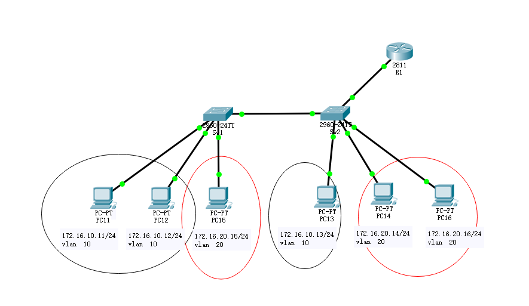

vlan间路由
vlan间路由必须经过三成设备，可以是路由器或者三层交换机
路由器-单臂路由

这里仅演示单臂路由的配置，其他vlan、接口配置参考 思科交换机vlan配置
单臂路由
Sw2>enable
Sw2#configure terminal
Sw2(config)#interface fastEthernet 0/23
Sw2(config-if)#switchport mode trunk
Sw2(config-if)#no shutdown
R1>enable
R1#configure t
R1(config)#interface fastEthernet 0/0.10
R1(config-subif)#ip address 172.16.10.254 255.255.255.0
R1(config-subif)#encapsulation dot1Q 10 ##10为vlan ID
R1(config-subif)#exit
R1(config)#
R1(config)#interface fastEthernet 0/0.20
R1(config-subif)#encapsulation dot1Q 20
R1(config-subif)#ip address 172.16.20.254 255.255.255.0
R1(config-subif)#
R1(config-subif)#end
R1#
想要互通还需要在pc上配置网关，vlan10的配置为172.16.10.254，vlan20的配置为172.16.20.254
三层交换机

这里仅演示三层交换机的配置，其他vlan、接口配置参考 思科交换机vlan配置
与三层交换机连接的端口需要时trunk口
Switch9(config)#interface fastEthernet 0/23
Switch9(config-if)#switchport mode trunk
Switch9(config-if)#no shutdown
L3Switch>enable
L3Switch#configure t
L3Switch(config)#ip routing
L3Switch(config)#interface fastEthernet 0/24
L3Switch(config-if)#switchport trunk encapsulation dot1q
L3Switch(config-if)#switchport mode trunk
L3Switch(config-if)#exit
L3Switch(config)#
L3Switch(config)#vlan 10
L3Switch(config-vlan)#name HR
L3Switch(config-vlan)#exit
L3Switch(config)#
L3Switch(config)#vlan 20
L3Switch(config-vlan)#name SALES
L3Switch(config-vlan)#exit
L3Switch(config)#
L3Switch(config)#interface vlan 10
L3Switch(config-if)#ip address 192.168.10.254 255.255.255.0
L3Switch(config-if)#no shutdown
L3Switch(config-if)#exit
L3Switch(config)#interface vlan 20
L3Switch(config-if)#ip address 192.168.20.254 255.255.255.0
L3Switch(config-if)#no shutdown
L3Switch(config-if)#
配置完成后，pc需要指到相应的网关，vlan10的为192.168.10.254，vlan20的为192.168.20.254